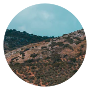
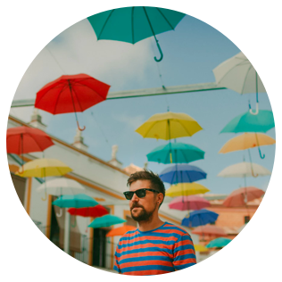
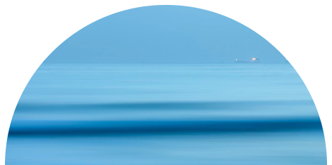

Se solicita un Sistema de Gestión de Destino Turístico Inteligente que tenga por principales objetivos fidelizar al viajero, captar nuevos mercados y apoyar a las pymes en materia de transformación digital y nuevas estrategias de marketing, a través del desarrollo progresivo de una plataforma que ofrezca servicios para sí misma y para sistemas de terceros.
  Trataremos de trasnmitir esas sensaciones y emociones propias de Andalucía a nivel visual basándonos en la calidez de los tonos para potenciar su luz y color, La energía tomando como referencia elementos e iconos propios del arte azulejos, la cultura islámica y la sencillez elegante de sus monumentos, como la Giralda.